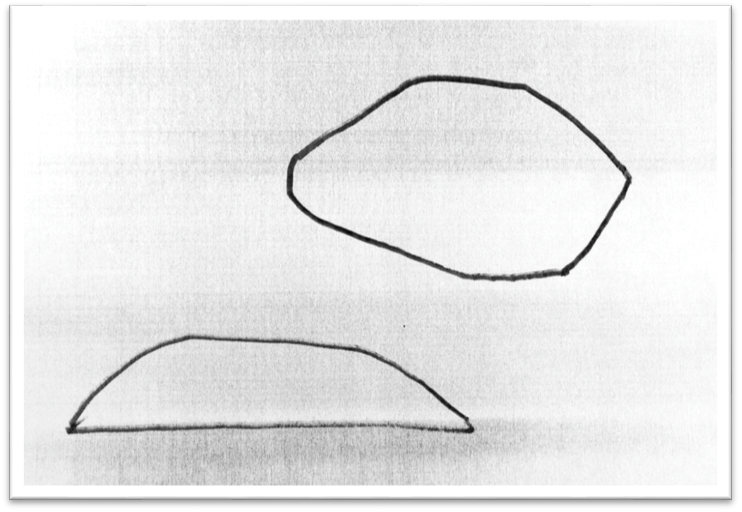
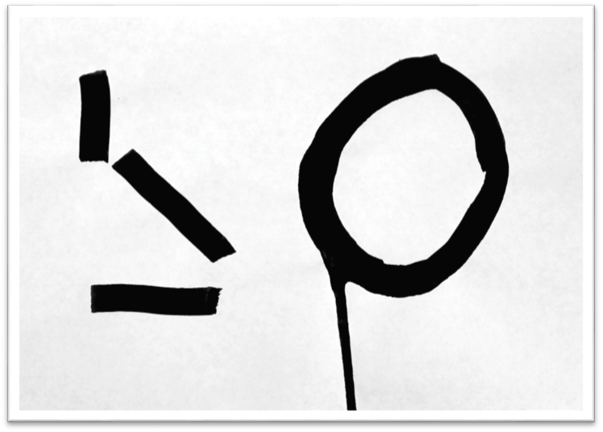

Юрий Александрович Тореев назвал свою новую серию работ «абстрактными».
Действительно, эти работы не были задуманы как плакаты, иллюстрации, виньетки и т.п. Это произведения чистого искусства, они возникают от потребности Художника высказать свои глубоко-личные чувства и переживания.
Высказать – и тем облегчить свою душу. «Соловей поёт – себя тешит» — гласит русская поговорка.
Все работы данного цикла можно подразделить на жанры (условно), хотя и не слишком точно: Художник отличается сверхобычным свободолюбием, он не терпит власти канонов. Автор этих строк убеждён: любой зрительный образ содержит некий смысл. Поэтому термин «абстрактное искусство» следует понимать условно. На самом деле оно (искусство) способно рассказать очень много тому, кто желает прислушаться к его беззвучной речи.

Мне видится здесь пейзаж: остров в океане и облако над ним.
Один объект плавает, другой – летает. Их бытие различно: оно обусловлено положением в пространстве. При всей своей простоте сюжет содержит ряд антиномий: тяжёлое – лёгкое, половина – целое, полускрытое – открытое, движение исполненное – ожидаемое (второй «камень» тоже утонет); контур остроугольный – тупоугольный… (Можно фантазировать ещё).
Картина вызовет у философа размышления о числе «два» — таком вездесущем, благотворном и опасном одновременно.

В этом этюде — четыре движения кисти: три прямые черты и окружность. Три отрезка прямой линии составляют осмысленную систему: здесь есть вертикаль, горизонталь и наклонная линия под углом 45градусов к горизонту. Это минимальный набор элементов, из которых можно построить бесконечное множество конструкций (при наличии достаточного количества «полосок»). Здесь господствует разум, система и правила геометрии.
Однако, справа мы видим «представителя» другого мира — кольцо (т.е. окружность, хотя и не совсем правильную). С него стекает струйка лишней чёрной краски: это придаёт кольцу характер «живого существа», не обладающего безукоризненной правильностью геометрической фигуры. К тому же, эта фигура — скорее овал, чем круг — не вычерчена, а нарисована не совсем твёрдой рукой.
Сюжет этой картинки можно прочесть как противопоставление прямого и кривого, геометрического и органического, мелкого и крупного, твёрдого и жидкого (потёк краски). Думаю, что Художник нарисовал эту композицию почти бессознательно, автоматически, подчиняясь своему непреодолимому стремлению к свободе от канонов и общепринятых требований к искусству.
Если вы увидите лист бумаги, на котором ничего не изображено – как вы на это отреагируете? Однозначного ответа на этот вопрос не существует. Предлагаю выбрать ответ из списка возможных (неполного, конечно):
- Напишу что-нибудь – первое пришедшее в голову: «А чего вам надо?»
- «Катенька, я Вас люблю безумно» (это цитата).
- Список дел на сегодня и на ближайшее время.
- Нарисую то, что мне желанно увидеть (подобно А.С.Пушкину): «Перо, забывшись, не рисует/ Близ неоконченных стихов / Ни женских ножек, ни голов/»
- Сделаю смелый широкий росчерк фломастером во весь лист (т.к. я не терплю пустоты ни в пространстве, ни в мыслях, ни на бумаге).
- Позволю своему перу покрыть лист сетью линий произвольной конфигурации – пусть рука рисует, что хочет – мой разум и воля отдыхают. Это называется автоматическое письмо.
И т.д.
Признание автора этих строк: лист белой бумаги может вызвать не менее благоприятные эмоции, чем рисунок или живопись.
Быстрый и смелый рисунок, как будто стихийный, без предварительного замысла и без расчёта – но в нём ясно просматривается система: главное и второстепенное, крупное и мелкое, горизонтальное и вертикальное, округлое и протяжённое. Рука Художника настолько дисциплинирована, что сама знает, как нужно рисовать, и не нуждается в подсказках разума.
Анти-каллиграфия: квази-шрифты, псевдо-строчки, таинственные письмена. Они отличаются друг от друга композицией на листе — если можно назвать композицией эти россыпи каракулей – искажённых подобий букв алфавита. Эти три работы задают мне трудный вопрос: почему я готова рассматривать их без конца? Чем они так привлекательны?
Попробуем разобраться.
1. Художник демонстрирует здесь полную свободу – которая невозможна ни в каком другом жанре искусства (кроме поэзии А.Кручёных). Возникает подсознательное ощущение: если сам не можешь себе позволить такой степени свободы — то приятно хоть полюбоваться на свободное творчество другого художника.
2. Хочется рассматривать в подробностях каждую букву — и поражаться фантазии Юрия Тореева, не повторившего нигде и ни одного своего рисунка в целом и в деталях.
3. Запомнить и воспроизвести эти «письмена» невозможно. Возникает философский вопрос: не такова ли судьба всех тысяч книг, которые мы перечитываем за свою жизнь? Что мы усвоили, что помним? Несколько хороших стихов… Не так уж много…
Работы Ю. Тореева 23, 24, 25 можно назвать «анти-каллиграфией». Художник употребил свою незаурядную изобретательность на то, чтобы лишить буквы алфавита всякой красоты или изящества. Он повторил мысль авангардистов ХХ века: изящное – не правдиво.
Это почти идеальные «каракули» - следы самопроизвольных движений руки с фломастером над листом белой бумаги. Однако, почему «почти»? Здесь, несмотря на страшный беспорядок, просматривается композиция: сгусток штрихов имеет общую форму дуги, или «гирлянды», а два фрагмента на нижних уголках листа подчёркивают идею симметрии.
Так мог бы «написать» ребёнок, желающий изобразить грамотного человека, но пока ещё не знакомый с алфавитом. Инфантилизм – ценное качество души человека. Дети – существа чистые и безгрешные (в идеале) – этим они нам и симпатичны. Сказано ведь: «Если не обратитесь и не будете, как дети, не войдёте в Царство Небесное» (Мф. 18:3).
Временами в искусстве появляются мастера, которые сознательно отвергают школу современной им живописи и возвращаются к примитиву – иными словами, к «неумелому» детскому рисунку. В нём можно выразить свои мысли и чувства непосредственно и наивно, минуя условности модных стилей. Не всякому образованному художнику это дано.
Юрий Тореев умеет «опрощаться». Многие великие люди, достигшие высот искусства, стремились вернуться к простоте:
«И напоследок впасть, как в ересь, / В неслыханную простоту», - сказал Поэт.
В этой парной композиции визуализированы две фазы бытия бессознательного. Левая работа – зарождение неясной мысли и бесформенного ощущения. Светлое «нечто» ещё не обрело формы. Правая работа – гибель Сущего. Обломки каких-то форм тонут в непроглядном мраке Небытия.
Изящные (и не бессмысленные) каракули. В каждой строчке этого письма выражено определённое душевное состояние. Попробуем его определить.
- Строчка 1. Относительно спокойно, почти ритмично.
- Строчка 2. Торопливо, легко и весело, с фантазией.
- Строчка 3. Взволнованно, изящно, музыкально (почти вальс).
- Строчка 4. Тревожно, испуганно (паника), дрожь от страха.
- Строчка 5. Твёрдый и ясный Голос свыше. Приказ, который нельзя нарушить. Итог всех сомнений и размышлений.
- Строчка 2. Торопливо, легко и весело, с фантазией.
Очень хочется написать ответ Юрию Александровичу на этом эзотерическом языке, но боюсь – не сумею. Л.М.
Здесь рука с кистью получила полную свободу от необходимости выражать какие-либо оттенки мыслей или чувств, а также выполнять какие-либо требования эстетики (или искусства шрифта). То, что мы видим на листе — визуализация понятия «Завочная форма навучання», точнее – пародия на неё.
Мы ещё раз убедились в неограниченных возможностях шрифта как средства выразительности.
В этой работе рука Художника движется последовательно тремя способами: «спираль», «волна», «частокол». В каждом из трёх рядов задан особый тип движения; он продолжается почти автоматически от начала ряда до конца. Такую каллиграфию можно назвать «полуавтоматической», или «полубессознательной».
Здесь достигнута предельная мера автоматизма. Кисть наносит только точки чёрной краски на белую бумагу. В результате просматривается намёк на большой квадрат типа тканого узора на скатерти. Выполняя такую работу, можно «активно отдохнуть» от мыслей о композиции, рисунке, технике, колорите, о форме и содержании, о стиле… Иными словами, достигнуть полной меры бессознательности, то есть поручить свою кисть заботам Высшего Разума, руководящего нами в те моменты, когда наш малый человеческий разум почему-либо отключается или слабеет.
Классически-чистый пример бессознательного письма. Вы можете прочесть здесь всё, что вам угодно. Например: «Дыр бул щил убещур…р, л, эз…и т.д.»
Это жирные чёрные каракули (назовём вещи своими именами). Впрочем, при наличии живого воображения можно заметить здесь лирическую сцену типа «свидание»: к лежащей мужской фигуре нежно прильнула женская голова. В принципе любое бесформенное пятно краски может вызвать ассоциации с чем-то реальным и материальным. Ведь мир вещей бесконечно разнообразен. В рис. 268 вряд ли был какой-либо сюжетный замысел. Рисунок даже не подписан. Видимо, он относится к числу бессознательных.
Л. Миронова, 19.08.2018